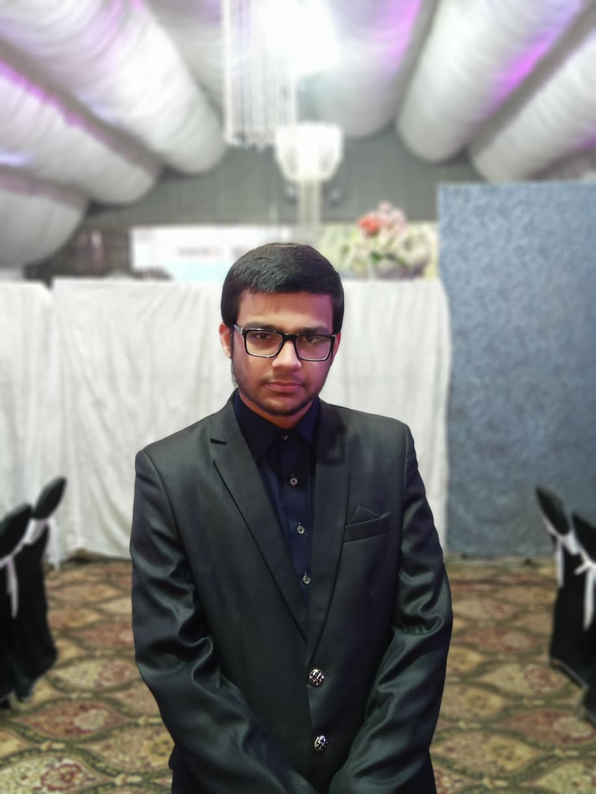

Muhammad Khan, Full-Stack and Android Developer
About me

I am a Programmer, Full-Stack developer, and Android developer, currently studying for a Software Engineering degree from Virtual University.
I like programming because I am a natural problem solver. I prefer to program in Python with which I have four years of experience. I write concise and clean pythonic code. I have a good understanding of functional and object-oriented programming paradigms and use them extensively in my projects.
I am quite proficient in HTML5, CSS3, and JavaScript. I have a strong understanding of responsive and mobile-first web design principals. I’ve created a handful of web applications with Flask.
I have adequate knowledge of relational databases and SQL. I am experienced with C++, Kotlin, and PHP, and have dabbled in game design using the Godot engine, Pygame, and Kivy. I have experimented with a myriad of frameworks and technologies.
I am a self-motivated developer blessed with a healthy amount of curiosity and ambition. I am rational and logical and love a challenge. I am dedicated and always willing to go the extra mile to make my mark on the programming world.
Portfolio

Virtual Piano

Flashcards

Technical Documentation